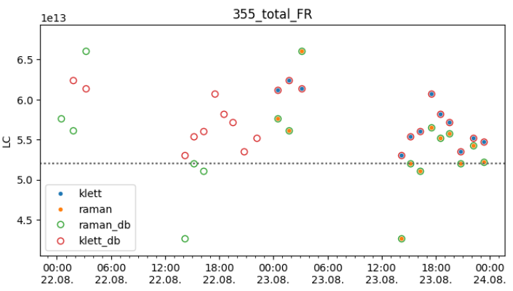

Calibration Constants#
Polarization Calibration#
The delta-90 polarization calibration for the detected time periods is done with polarizationCaliD90().
Resulting etas are stored in data_cube.pol_cali for all the time intervals and data_cube.etaused for the one with the lowest standard deviation.
>>> data_cube.polarizationCaliD90()
>>> data_cube.pol_cali
{'D90':
{'355_FR': [
{'eta': 10.602253607032777,
'eta_std': 0.36947564349830514,
'time_start': 1755916590,
'time_end': 1755916800,
'status': 1},
{'eta': 10.45194101666947,
'eta_std': 0.27254858255926373,
'time_start': 1755968190,
'time_end': 1755968400,
'status': 1},
... ]
>>> data_cube.etaused
{'355_FR': np.float64(10.754878969562773),
'532_FR': np.float64(6.852638549685832)}
A method for polarization calibration at the reference height is also implemented, but not extensively tested or used operationally: polarizationCaliMol()
Lidar (absolute) Calibration#
After retrieval of the optical profiles, the Lidar calibration constants can be calculated with LidarCalibration().
Similarly to the polarization calibration the values are stored in data_cube.LC with values with the lowest standard deviation are selected into data_cube.LCused.
>>> data_cube.LidarCalibration()
>>> data_cube.LC
{'klett': {
'532_total_FR': [
{'LC': np.float64(76651241245552.4),
'LCStd': np.float64(38384910061.7245),
'time_start': 1755907200, 'time_end': 1755910770},
{'LC': np.float64(79019754266917.53),
'LCStd': np.float64(20060545795.042507),
'time_start': 1755910800, 'time_end': 1755916200},
{'LC': np.float64(77383458139465.62),
'LCStd': np.float64(30826575129.720245),
'time_start': 1755916830, 'time_end': 1755920400},
... ],
'355_total_FR': [
{'LC': np.float64(61221519590893.43),
'LCStd': np.float64(15266830837.91351),
'time_start': 1755907200, 'time_end': 1755910770},
... ]},
'raman': {
'355_total_FR': [
{'LC': np.float64(57637355636083.1),
'LCStd': np.float64(42772775199.508766),
'time_start': 1755907200, 'time_end': 1755910770},
{'LC': np.float64(56121416303705.17),
'LCStd': np.float64(65519957166.51127),
'time_start': 1755910800, 'time_end': 1755916200},
... ]},
}
>>> data_cube.LCused
{'532_total_FR': np.float64(47109585570330.64),
'355_total_FR': np.float64(51991322600216.1),
'1064_total_FR': np.float64(418368070699337.2),
'532_total_NR': np.float64(6649087258385.09),
'355_total_NR': np.float64(9550053707341.717),
'387_total_FR': np.float64(51991322600216.1),
'607_total_FR': np.float64(47109585570330.64),
'607_total_NR': np.float64(6649087258385.09),
'387_total_NR': np.float64(9550053707341.717)}
Writing/Reading Database#
A sqlite database for storage of the retrieved calibration data is defined in data_cube.polly_config_dict['calibrationDB'] (originally in the respective config file): write_2_sql_db()
data_cube.write_2_sql_db(parameter='LC', method='raman')
data_cube.write_2_sql_db(parameter='LC', method='klett')
data_cube.write_2_sql_db(parameter='DC')
Storing multiple times will update the calibration constants, if exactly the same time interval is used for the optical profile.
The calibration constants can also be read back into picassopy: read_calibration_db()
data_cube.read_calibration_db()
The values are then stored into data_cube.LC['raman_db'], data_cube.LC['klett_db'] and data_cube.pol_cali['D90_db'], respectively.
A basic visualization of the calibration constants is also available by plot_cals()
from ppcpy.calibration.select import plot_cals
plot_cals(data_cube.pol_cali, 'eta', used=data_cube.etaused)
plot_cals(data_cube.LC, 'LC', used=data_cube.LCused)
{kind=link}
